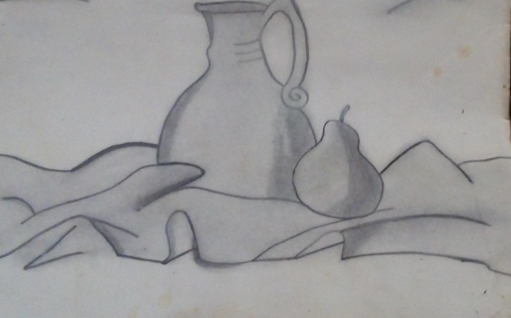
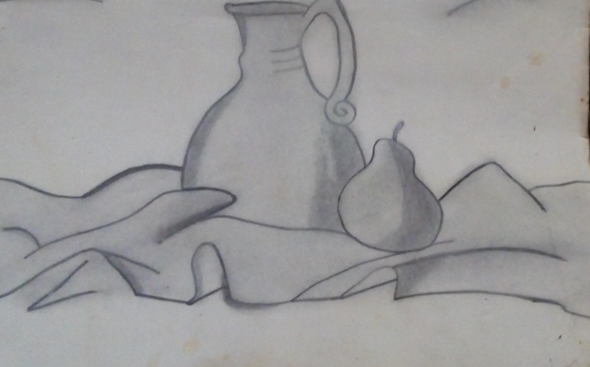

Primeramente les empezare contando que a mi desde chiquita me ha gustado bailar, siempre salía en los bailables de la primaria, incluso iba clases de danza folclórica en la asegurada de Ruiz Cortines, siempre pedía estar en los bailables que se hacían en las clausuras de la escuela. En la secundaria salí en porristas el equipo se llamaba Pumas. Hasta la fecha me sigue gustando muchísimo bailar.
Cuando estaba en la primaria y en la secundaria me gustaba mucho dibujar, de hecho en la primaria estuve en un curso de dibujo y pintura que mencione en la parte de mis estudios. También me gusta mucho hacer manualidades entre ellas las piñatas que mi mamá me enseño hacer.
 

Otra de las cosas que me gusta hacer mucho es salir a pasear y divertirme mucho, un ejemplo de ello es uno de los días que fuimos al Malecón en Sinaloa de Leyva y me subí a los juegos de los niños, es bonito disfrutar y saber que aun llevas un niño dentro, que la edad no importa para divertirse y que no debe importar lo que los demás digan. También me avente por la tirolesa que atraviesa el rio de Sinaloa, es una sensación muy agradable pero también se sienten un poco de nervios.


Una de las cosas que más me gusta es comer, mi comida favorita son los chiles rellenos que hace mi mamá, están riquísimos. También otra de la comida que me gusta mucho son los tamales que hace mi abuela materna. A parte de comer también me gusta hacer comida, se hacer los chiles rellenos que tanto me gustan, estoy aprendiendo hacer pan casero, también se hacer otras comidas más.

Una más de las cosas que me gusta hacer es elaborar peinados de fiesta y maquillar, esto lo aprendí en la preparatoria y lo he seguido reforzando con el paso de los años.
© SRG Productions ™